I have learnt the basics of html and also learnt how to change the colours of the words and add youtube videos and pictures via searching google for the week 1 activity. Week 1 was tough to adjust to the new language but i was able to quickly catch up with things as the slides were very detailed.
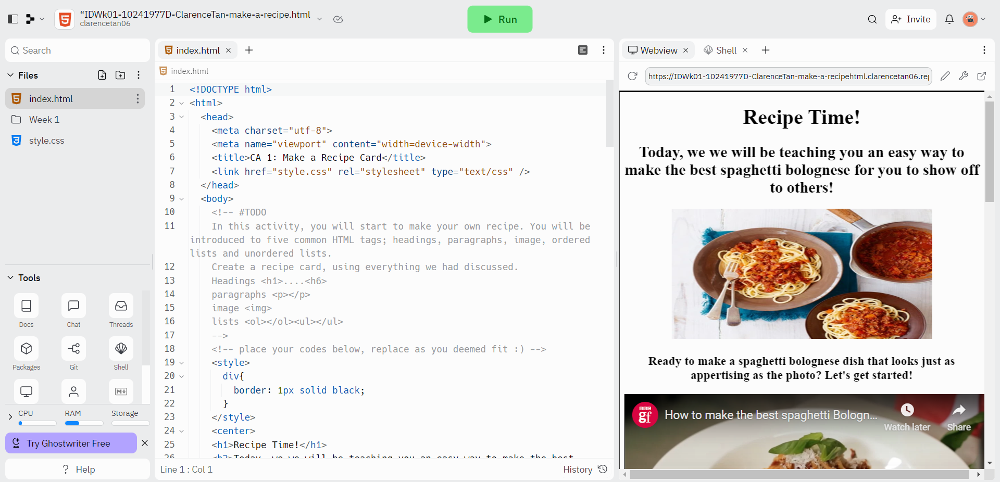I've learnt about html 5 semantic and also learnt new elements such as aside,article and others. I also learnt CSS and learnt that CSS defines the style of html. CSS is colour, size and position while html is content and structure.also learnt about ID and class attributes.
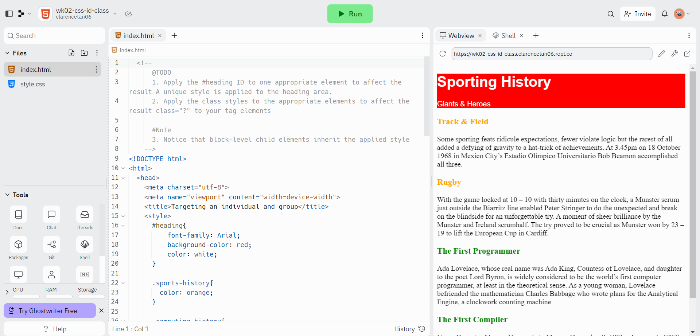We did advanced CSS layout. Also learn about forms, CSS recap and flexbox. Also learnt about media queries and the need to make the website suitable for diff devices(positioning).
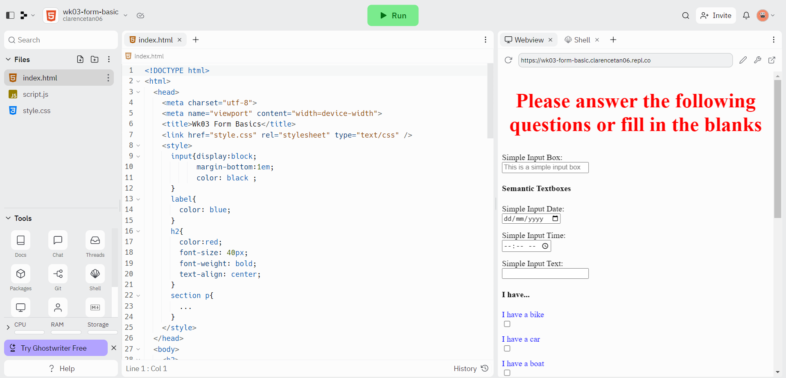 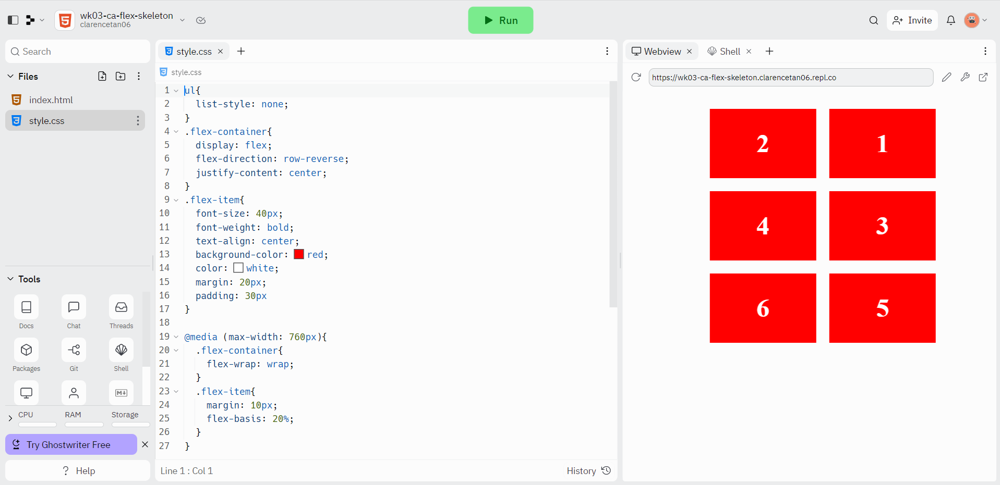Week 4 we learnt more about flexbox and also learnt how to control the width of images. split flex for example allow us to position images in a way we want to in the website. We also learnt how to use a background image.
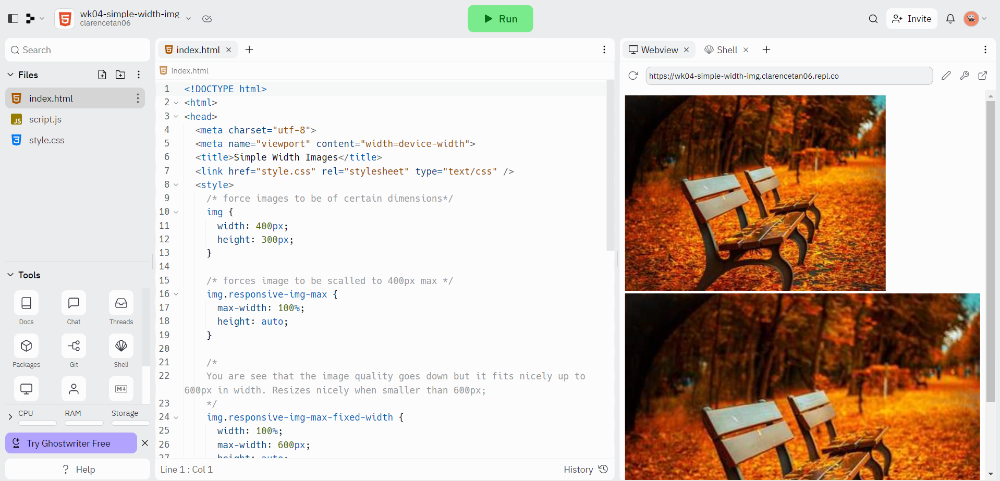 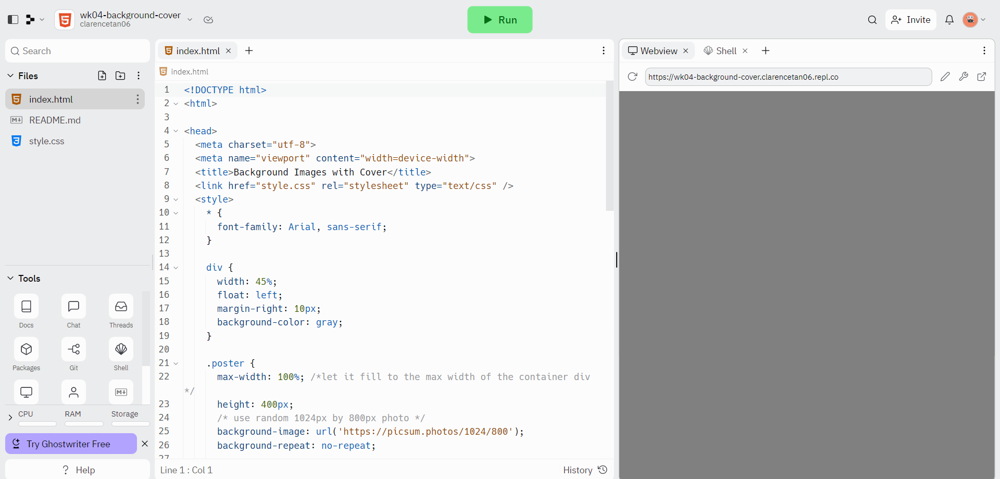 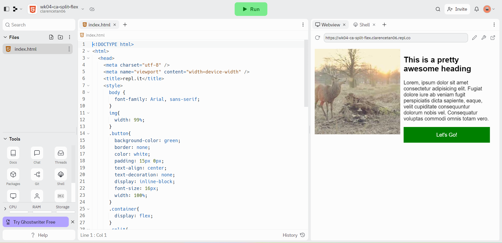Week 5 we used the linkedin video to learn more about javascript. we were also given practises to practise javascript and use the skills that we learnt in different scenarios.
Week 6 we recapped a bit on basic javascript that we learnt in week 5. We also learnt about if else statements and loops that can be used in javascript. This week was a bit tough to understand but after a while and after going through some of the CA's i got a bit more used to it.
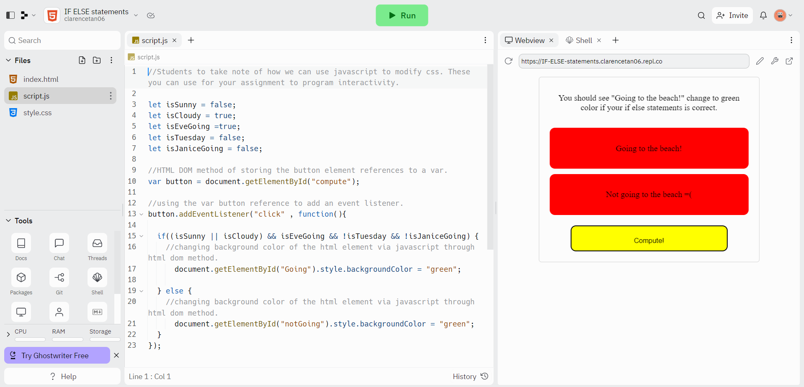Week 7 we learnt how to do sample username checks and how to do it such that the user has to input a certain number of characters.
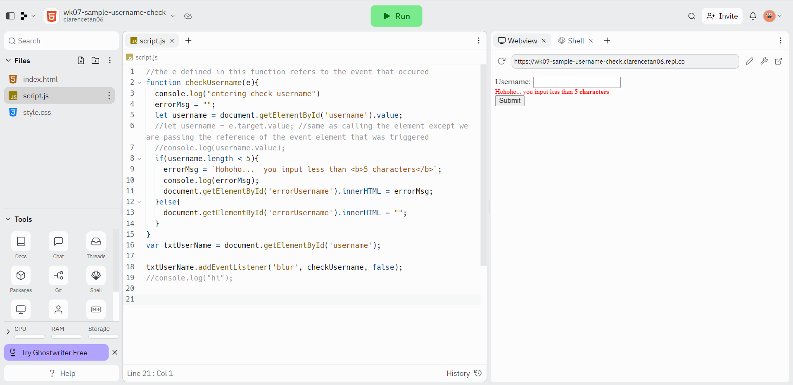Week 8 we learnt about bootstrap and j-query. Also learnt about how to make things disappear when clicking it.
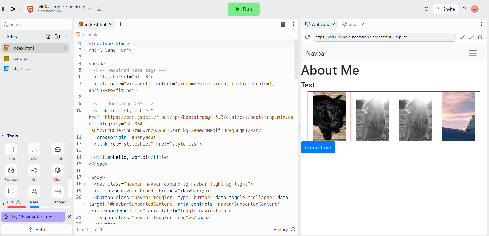 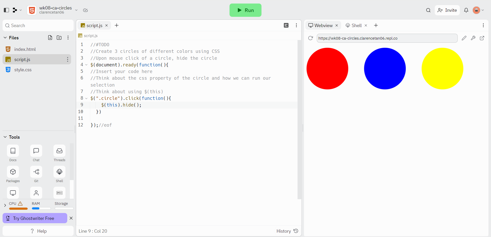Learnt more about bootstrap.
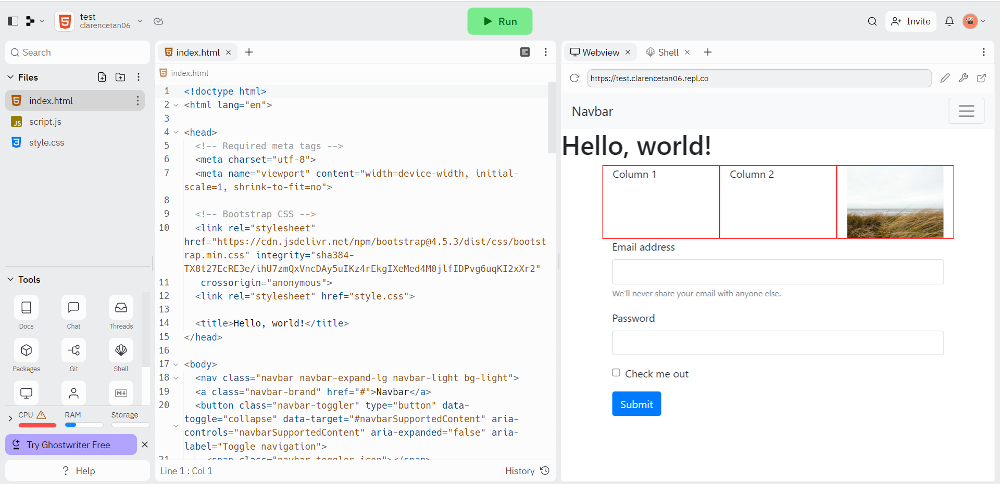Week 12 did some recap on what we've learnt so far and also learnt about RestDB and how to collate responses from forms.
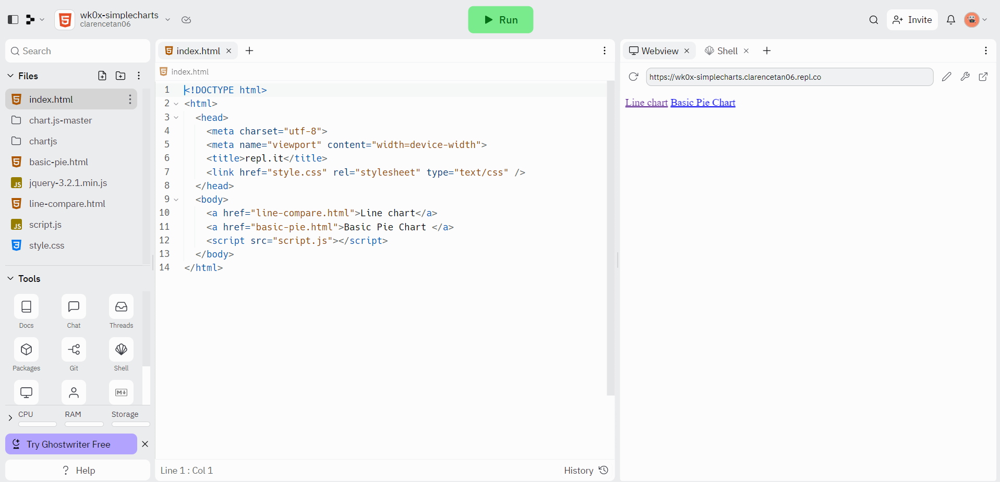 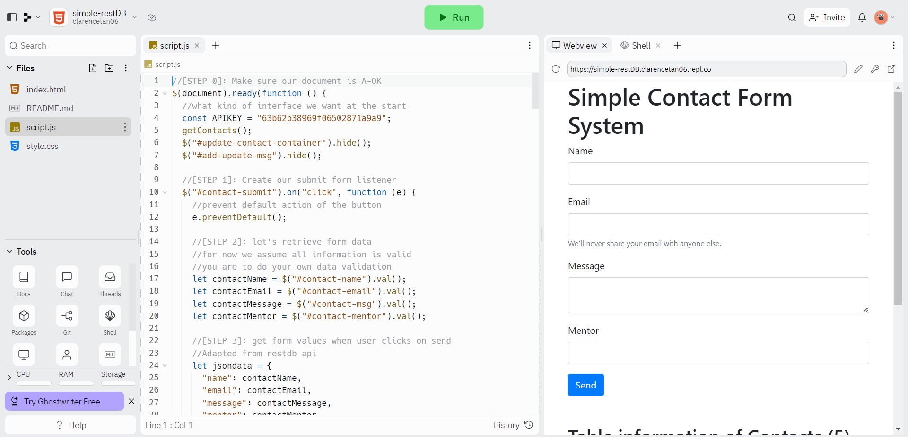week 13 was a continuation from week 12's restDB
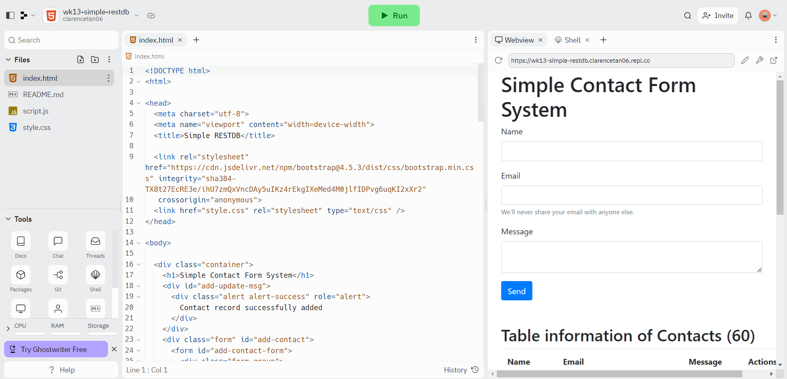week 14 learnt about lottie and how you can add animations to a website or even when the page refreshes or only when you want it, eg using the hide function.